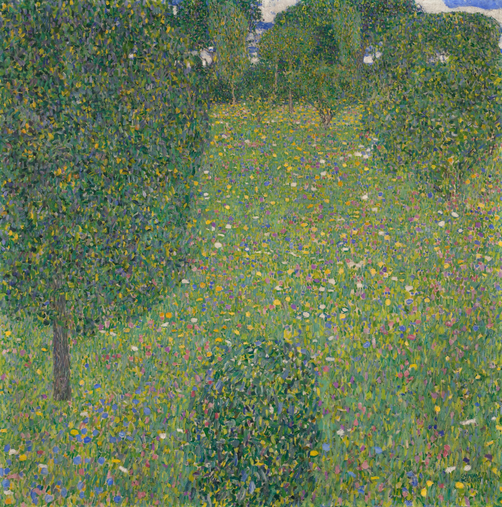

Can Frontier AI Models Read a Painting?
Four frontier models appraised fifteen paintings worth $1.46 billion, first from the image alone and then with metadata. Gemini 3.1 Pro could commit to a price from the image. GPT-5.4 would not commit without textual verification first. That difference in how they respond to visual evidence tells you a lot about how these models would actually look at and evaluate art.
I have been curious for a while whether frontier AI models can genuinely evaluate art. Not just recognize a famous painting from its label, but actually look at the canvas and understand what it is worth. Reading brushwork, identifying style, placing a work in a market context, all from pixels alone. Art felt like the right test because the price of a painting compresses everything into a single number by taking into account the artist, the period, the rarity, the technique, and what the market has decided all of that is worth. Remove the label and all that is left is the image, and whatever the model can actually reason about from looking at it.
The gap between those two conditions turned out to be the most revealing part of the experiment. When I added the label, Gemini 3.1 Pro barely changed, because the metadata simply confirmed what its visual reasoning had already concluded. For GPT-5.4, that same information served an entirely different purpose, acting as validation that the painting was genuine and correctly attributed, which is what finally allowed it to price the work close to its real value. That difference in how each model responded to text is worth paying attention to.
The cleanest way to describe what I found is Recognition vs Commitment. Three of the four models named the correct artist from the pixels on essentially every painting, which was one of the most surprising findings in the entire study. What distinguishes them is not whether they recognize the work but what they do with that recognition.
- Gemini 3.1 Pro was the best model in both conditions. From pixels alone its typical estimate landed within a factor of about 2 of the true price, and on paintings that sold after its training cutoff it was off by about 1.5x on average. It recognizes the artist from the image and commits to the price its own reasoning implies, and its confidence scores track accuracy closely enough to be genuinely useful as a trust signal.
- GPT-5.4 sees the painting but refuses to commit without textual verification. It correctly reads the style and names the artist from the pixels, then prices the work as an anonymous follower because visual recognition alone is not enough for it to cross the attribution line. Add a text label and the estimate can jump by four orders of magnitude. The label buys permission to act on what the model already saw, not new information.
- The metadata improvement factor is the most useful diagnostic here. Gemini's accuracy improved by 1.57x with metadata, GPT's by 6.62x. That gap is what makes the Recognition vs Commitment axis observable from the outside: it shows where each model sits between recognizing the work and committing to a price, without needing to read the reasoning traces, and it may well generalize beyond art.
The Setup
Each model appraised each artwork twice, once from the image alone with no title, no artist, and no year, and then again with basic catalog metadata. I chose four frontier models for this experiment, one open-source and three closed-source, and fifteen artworks, which was small enough that I could read every reasoning trace myself and catch anything weird.
Each model returned a dollar estimate, a confidence score from 0 to 1, and internal reasoning that I logged verbatim. The system prompt told every model, in both conditions, to assume the artwork was authentic and legally available for sale and to give its professional fair-market estimate.
The image-only prompt simply asked models to appraise the artwork "based solely on what you can see" with no identifying information. The metadata prompt added the title, artist, year, and a brief description, but still provided no provenance documentation, condition report, or auction history. The full prompts are available in the repository.
One important condition. Web search and any other external tools were disabled for all four models in both conditions. Every estimate in this post comes from the image plus (optionally) the four-word metadata label and whatever the model has internalized from training, with no live lookups.
The Dataset
I chose 15 artworks with verified auction prices spanning five orders of magnitude, from $4.7 million to $450 million. The three categories were designed to stress-test different failure modes, including whether models can recognize what they have definitely seen in training, handle works whose prices postdate their training cutoff, and price contemporary works by artists who are not household names but whose markets are nonetheless serious.
Masterpieces ($78M to $450M)
Works so famous that every model almost certainly encountered them and their prices in training. These test whether models can recognize iconic works from images alone and whether that recognition leads to calibrated estimates or just a vague sense that something looks expensive.
| Title | Artist | Year | Auction Price |
|---|---|---|---|
| Salvator Mundi | Leonardo da Vinci | c. 1499–1510 | $450.3M |
| Nu couché | Amedeo Modigliani | 1917–18 | $170.4M |
| The Scream | Edvard Munch | 1895 | $119.9M |
| Portrait of Dr. Gachet | Vincent van Gogh | 1890 | $82.5M |
| Bal du moulin de la Galette | Pierre-Auguste Renoir | 1876 | $78.1M |
Recent Out-of-Distribution ($54M to $236M)
Famous artists, but specific works that sold at auction in November 2025, close to or just past most model training cutoffs. The models know these artists' styles and general market tiers from training, but the specific November 2025 hammer prices were unlikely to be in the training data. This is the cleanest test of genuine visual appraisal in the entire dataset.
| Title | Artist | Year | Auction Price |
|---|---|---|---|
| Bildnis Elisabeth Lederer | Gustav Klimt | 1914–16 | $236.4M |
| Blumenwiese (Blooming Meadow) | Gustav Klimt | c. 1908 | $86.0M |
| Romans Parisiens (still life) | Vincent van Gogh | 1887 | $62.7M |
| No. 31 (Yellow Stripe) | Mark Rothko | 1958 | $62.2M |
| El sueño (The Dream) | Frida Kahlo | 1940 | $54.7M |
Contemporary Art ($4.7M to $25M)
Popular living artists whose works sell for serious money but sit a tier below the historic Old Masters. Their visual style is often unmistakable (a Yoshitomo Nara is hard to miss), but the actual price tier is set by gallery representation, critical reputation, and collector networks. This category tests whether models can read the style that is in the image and still place the work at a contemporary price level rather than at masterpiece tier.
| Title | Artist | Year | Auction Price |
|---|---|---|---|
| Knife Behind Back | Yoshitomo Nara | 2000 | $24.9M |
| Pie Fight Interior 12 | Adrian Ghenie | 2014 | $10.4M |
| Walkers With the Dawn and Morning | Julie Mehretu | 2008 | $10.7M |
| The Beautyful Ones | Njideka Akunyili Crosby | 2012 | $4.7M |
| Force Field | George Condo | 2010 | $6.9M |
How I Measure Accuracy
Art prices span five orders of magnitude in this dataset. A naive dollar error would be dominated by the most expensive works. Being off by $50M on a $450M Leonardo and being off by $50M on a $62M Rothko look the same in dollar terms, but one is an 11% error and the other is an 80% error.
The right tool is the valuation ratio, which is the model estimate divided by true auction price.
- 1.00 = perfect
- 2.00 = overvalued by 2x
- 0.50 = undervalued by 2x
The right summary metric is Mean Absolute Log Error (MALE).
MALE = mean( |log10(estimate / true)| )MALE treats overestimates and underestimates symmetrically. Every MALE value translates to a typical error factor by raising 10 to that value: a MALE of 0.3 means the typical estimate is off by about 2x (because 100.3 ≈ 2), 0.5 means about 3x, 1.0 means 10x, and GPT-5.4's image-only score of 1.963 means about 90x on average across the fifteen paintings. As a sanity check on what these MALE numbers actually mean, a model that just guessed $50M for every painting (no looking, no reasoning, same number every time) would score around 0.46 on this dataset.
The Results
Image-Only vs With Metadata
| Model | Image Only | With Metadata | ||
|---|---|---|---|---|
| MALE (lower = better) | Avg Confidence | MALE (lower = better) | Avg Confidence | |
| Gemini 3.1 Pro | 0.267 | 0.941 | 0.170 | 0.925 |
| Claude Sonnet 4.6 | 0.687 | 0.607 | 0.203 | 0.633 |
| Qwen 3.6 Plus | 0.649 | 0.898 | 0.259 | 0.884 |
| GPT-5.4 | 1.963 | 0.338 | 0.296 | 0.731 |
| Numbers shown use run 0. n=3 runs per condition were executed end-to-end and results were stable across runs. Avg Confidence is the mean of the self-reported confidence score (0 to 1) each model attached to its own appraisal, averaged across all artworks. | ||||
Gemini 3.1 Pro wins both conditions by a clear margin. Its image-only MALE of 0.267 is less than half of the next-best model's, and the model section below explains why GPT-5.4's 1.963 is more nuanced than it looks at first glance. With metadata all four models tighten dramatically, the gap between them narrows considerably, and GPT-5.4 recovers to competitive once it has the textual confirmation it needs.
The Metadata Effect
| Model | Image-Only MALE | With Metadata MALE | Improvement Factor |
|---|---|---|---|
| GPT-5.4 | 1.963 | 0.296 | 6.62x |
| Claude Sonnet 4.6 | 0.687 | 0.203 | 3.39x |
| Qwen 3.6 Plus | 0.649 | 0.259 | 2.51x |
| Gemini 3.1 Pro | 0.267 | 0.170 | 1.57x |
The key diagnostic. A large improvement from adding a text label (GPT at 6.62x) means the model was leaning heavily on the label rather than on the image. That could be database retrieval or as with GPT a cautious-without-verification posture where the text acts as confirmation that the work is genuine and correctly attributed, finally letting the model commit to a real price. A small improvement (Gemini at 1.57x) means the image was already doing most of the work. The exact reason behind a large gap varies by model, but the gap itself is informative, and the distinction may well generalize beyond art to any task where you want to know whether a model is actually processing an image or just reading the label next to it.
One number worth sitting with. Gemini 3.1 Pro's image-only MALE is 0.267 while GPT-5.4 with full metadata is 0.296. Gemini 3.1 Pro, from pixels alone, actually outperforms GPT-5.4 even when GPT-5.4 is given the artist's name and title. The image is doing what the label does for GPT-5.4, and doing it better. And two of the four models, Claude Sonnet 4.6 and Qwen 3.6 Plus, post image-only MALE scores (0.687 and 0.649) that are actually worse than the 0.46 a flat $50M constant guess would achieve on this dataset, which is the harshest way to put the image-only results in perspective.
Recognition vs Commitment
I originally wanted to cleanly separate memorization from genuine visual reasoning, on the theory that a model recalling "Salvator Mundi sold for $450M" is doing something fundamentally different from a model reading brushwork and reasoning its way to a price. After sitting with all 60 image-only reasoning traces (15 paintings across 4 models), I do not think that dichotomy actually holds up in the data. Every strong model is doing both at the same time, in the same paragraph, and you cannot cleanly sort one trace into one bucket.
What the traces do separate cleanly is recognition from commitment. So I went back and classified each trace on three things instead: did the model name the correct artist from the pixels, did it name the specific painting, and did it cite a specific auction price or sale history in its reasoning.
| Model | Named the artist from pixels | Named the specific title | Cited a specific auction price / house / year |
|---|---|---|---|
| Gemini 3.1 Pro | 15 / 15 | 10 / 15 | 13 / 15 |
| Claude Sonnet 4.6 | 15 / 15 | 8 / 15 | 13 / 15 |
| GPT-5.4 | 10 / 15 | 6 / 15 | 6 / 15 |
| Qwen 3.6 Plus | 12 / 15 (3 API failures) | 8 / 15 | 12 / 15 |
The first column is the one that surprised me. Recognition is nearly saturated. Three of the four models name the correct artist from the image alone on essentially every painting, and GPT-5.4 does it on two thirds of them. There is no meaningful sense in which Gemini 3.1 Pro is "the memorizer" and GPT-5.4 is "the reasoner." The thing that separates them is not whether they recognize the work but what they do with that recognition. So the axis I think the data actually supports is recognition plus commitment, and it gives four distinct archetypes that do not collapse into a single accuracy ranking.
Gemini 3.1 Pro: recognition plus commitment, with calibration
Gemini 3.1 Pro recognizes everything and commits fully. It names the artist, often names the title, cites the auction history, and lets all of that flow into the final estimate. This is why its metadata improvement factor is small: the text label is not telling Gemini anything it had not already extracted from the pixels. The cleanest single example is Klimt's Blumenwiese, a painting that sold in November 2025 and therefore could not have been memorized from training data, where Gemini reasoned its way to $75M on a true price of $86M purely from pixels.

Gustav Klimt, Blumenwiese (Blooming Meadow), c. 1908. Sold November 2025 for $86M.
"Upon rigorous visual examination, this artwork is unmistakably a prime example of Gustav Klimt's mature landscape painting... The piece immediately announces itself through its characteristic square format, a deliberate geometric choice Klimt adopted around 1899... The subject matter, a lush, densely packed orchard or flower meadow, is rendered with a technique that owes a debt to Neo-Impressionism and Pointillism, yet transcends them to become entirely unique to Klimt... Klimt landscapes are exceptionally rare and function as ultimate trophy assets for major international collectors."
Estimate: $75,000,000. Ratio: 0.872. Confidence: 0.95.
Gemini identifies the artist from the square format and the Pointillist brushwork, reasons about rarity and market context, and lands at $75M on a painting it had never seen. And when it reports 0.95 confidence, those estimates consistently land within 15% of true value across the dataset, so you can trust the model when it says it is sure.
Claude Sonnet 4.6 and Qwen 3.6 Plus, briefly
Claude Sonnet 4.6 recognizes every artist correctly but calibrates badly: it prices Dr. Gachet at $350M against a true $82.5M and Moulin de la Galette at $320M against a true $78M, assigning peak prices to recognized artists regardless of which specific work is in front of it. Recognition is fine, price mapping is broken.
Qwen 3.6 Plus commits enthusiastically on the wrong recognition. Two of its fifteen runs are confident misidentifications (Klimt as Henri Martin, Van Gogh as Duncan Grant) at 0.85 confidence, with no internal signal a downstream system could use to catch the error. The other three models avoided this failure mode entirely.
GPT-5.4: the commit threshold
GPT-5.4's behavior is the most interesting of the four because it is the easiest to misread. Looking at the raw numbers, you would assume GPT-5.4 simply cannot see paintings and recovers when given a label. The reasoning traces show something more specific. On Salvator Mundi, GPT-5.4 names Leonardo da Vinci in its first two sentences and then writes itself out of pricing the work as a Leonardo because, as the trace puts it, "in Old Master markets, attribution drives value more than almost any other factor" and the user supplied no provenance. The result is a workshop-copy price of $1.8M. Add four words of metadata and the same model prices the same painting at $350M. The vision model did not get better; the model received external permission to act on the attribution it had already made. The Modigliani is the cleanest single illustration of this two-state behavior.
GPT's two-state behavior on Nu couché. The vision model produces the same identification in both rows. The jump from $8,000 to $165M comes from the gate opening, not from the vision changing.
The same pattern repeats across the dataset: GPT-5.4 names Rothko on Yellow Stripe and prices it as a follower at $18,000 before jumping to $48M with the label, and it identifies Klimt's landscape practice on Blumenwiese and prices it as $8.5M unattributed before jumping to $42M. Three different art-historical periods, same gate firing in each. GPT-5.4's 6.62x improvement factor is mostly this authentication gate on famous works, plus a smaller share from genuine recognition failure on five less-famous contemporary pieces (Ghenie, Mehretu, Akunyili Crosby, Condo, and Van Gogh's Romans parisiens) where the model actually did not know what it was looking at. The appendix has the full verbatim Salvator Mundi and Nu couché traces for readers who want them.
What This Actually Tells Us
I started this experiment expecting to find out which frontier model is the best art appraiser. What I actually found is something more useful for thinking about multimodal models in general.
The first thing is that visual recognition of fine art is largely a solved problem at the frontier. Three of the four models named the correct artist from the pixels on essentially every painting in the dataset, including paintings that sold after their training cutoffs. If you had asked me a year ago whether a multimodal model could look at a Klimt landscape it had never seen captioned and identify it from the square format and Pointillist brushwork, I would have said probably not. It can.
The second thing is that recognition is the easy part. What separates the four models is what they do with that recognition once they have it. Gemini 3.1 Pro commits, calibrates, and ends up at the right price. Claude Sonnet 4.6 commits but assigns peak prices to recognized artists regardless of which specific work is in front of it. GPT-5.4 recognizes the artist and then refuses to act on that recognition until a text label authenticates it. Qwen 3.6 Plus commits enthusiastically, including on the small number of works where its recognition is wrong. None of these are vision failures. They are different downstream policies sitting on top of roughly comparable visual capabilities, and the policies are what produce the very different final numbers.
The third thing, which is the part I would actually carry to other domains, is that the gap between image-only accuracy and image-plus-metadata accuracy is a usable diagnostic for those policies. A small gap means the model commits from the image (Gemini 3.1 Pro, 1.57x). A large gap means there is a policy in the way that the metadata releases (GPT-5.4, 6.62x). The improvement factor lets you read each model's commit posture without having to read every reasoning trace, and more broadly it could give us a window into text calibration across different multimodal models, with art auction as one of the testbeds for studying it.
References
- Hyndman, R. J., & Koehler, A. B. (2006). Another look at measures of forecast accuracy. International Journal of Forecasting, 22(4). Source for the log-ratio error metric (MALE) used throughout.
- Kadavath, S. et al. (2022). Language Models (Mostly) Know What They Know. Anthropic. Background for the confidence-calibration claim about Gemini 3.1 Pro.
- Christie's auction records for Salvator Mundi (2017), Nu couché (2015), and Portrait of Dr. Gachet (1990). Sotheby's records for Bildnis Elisabeth Lederer and Blumenwiese (2025). Ground-truth prices for the fifteen-painting dataset.
- Full experiment code, prompts, per-artwork logs, and reasoning traces: github.com/arcAman07/llm-art-valuation.
Citation
If you use any of the data, code, framing, or findings from this post in your own work, please cite:
@misc{sharma2026llmartvaluation,
author = {Sharma, Aman},
title = {Can Frontier {AI} Models Read a Painting?
Recognition vs Commitment in Multimodal Art Valuation},
year = {2026},
month = apr,
howpublished = {Blog post, \emph{LLM Art Auctions} series (Part 1)},
url = {https://arcaman07.github.io/blog/can-llms-see-art.html}
}The full codebase, experiment logs, and results are available at github.com/arcAman07/llm-art-valuation.
Appendix
Click to expand. Detailed breakdowns referenced but not required to follow the main argument.
Category by Category (image-only MALE)
The same story the main post tells, sliced three ways. Each column is a model, each row is a category of the fifteen paintings.
| Category | Gemini | Claude | Qwen | GPT |
|---|---|---|---|---|
| Masterpieces | 0.323 | 0.376 | 0.228 | 1.505 |
| Recent OOD | 0.180 | 0.183 | 1.199 | 1.975 |
| Contemporary | 0.280 | 1.503 | 0.678 | 2.409 |
Four things worth naming from this table. Qwen 3.6 Plus scores best on Masterpieces (0.228) because its strongest mode is recognition of famous works; Gemini 3.1 Pro and Claude Sonnet 4.6 sit close behind at 0.323 and 0.376, and both of them also cited specific auction histories in their traces, so this is not a clean "Qwen memorized more" story so much as a "Qwen's recognition happens to line up with the masterpiece tier." Gemini 3.1 Pro and Claude Sonnet 4.6 essentially tie on Recent OOD at 0.180 and 0.183, which is the subset where no model could have memorized the specific prices since they sold in November 2025, and that near-tie is the strongest evidence in the whole dataset that both models were doing real visual appraisal on prices they had not seen. Contemporary is where Claude Sonnet 4.6 collapses (1.503) because it cannot recognize the less-famous artists and defaults to generic-decorative pricing, while Gemini 3.1 Pro at 0.280 holds up remarkably well. GPT-5.4 is the highest in all three categories as a consequence of its commit-threshold behavior.
Full per-artwork results (all 15 paintings, both conditions)
Image Only
| Artwork | True Price | GPT-5.4 | Claude | Gemini | Qwen |
|---|---|---|---|---|---|
| Masterpieces | |||||
| Salvator Mundi | $450.3M | $1.8M | $550M | $450M | $475M |
| Nu couché | $170.4M | $8K | $120M | $120M | $165M |
| The Scream | $119.9M | $150M | $300M | $300M | $185M |
| Portrait of Dr. Gachet | $82.5M | $95M | $350M | $250M | $185M |
| Bal du moulin de la Galette | $78.1M | $18M | $320M | $300M | $285M |
| Recent OOD | |||||
| Bildnis Elisabeth Lederer | $236.4M | $180M | $95M | N/A | $72M |
| Blooming Meadow (Klimt) | $86.0M | $8.5M | $55M | $75M | $125K |
| Romans Parisiens (Van Gogh) | $62.7M | $6K | $75M | $42M | $450K |
| No. 31 Yellow Stripe (Rothko) | $62.2M | $18K | $55M | $87M | $45M |
| El sueño (Kahlo) | $54.7M | $3.5M | $35M | $25M | $24M |
| Contemporary | |||||
| Knife Behind Back (Nara) | $24.9M | $1.8M | $5M | $12.5M | $1.85M |
| Pie Fight Interior 12 (Ghenie) | $10.4M | $6K | $120K | $8.5M | $3.2M |
| Walkers With the Dawn (Mehretu) | $10.7M | $12K | $75K | $4.5M | $8.2M |
| The Beautyful Ones (Crosby) | $4.7M | $180K | $2.8M | $3M | $525K |
| Force Field (Condo) | $6.9M | $4K | $22K | $2.5M | $1.4M |
With Metadata
| Artwork | True Price | GPT-5.4 | Claude | Gemini | Qwen |
|---|---|---|---|---|---|
| Masterpieces | |||||
| Salvator Mundi | $450.3M | $350M | $420M | $450M | $475M |
| Nu couché | $170.4M | $165M | $130M | $165M | $185M |
| The Scream | $119.9M | $180M | $210M | $350M | $155M |
| Portrait of Dr. Gachet | $82.5M | $275M | $300M | $250M | $195M |
| Bal du moulin de la Galette | $78.1M | $125M | $200M | $150M | $115M |
| Recent OOD | |||||
| Bildnis Elisabeth Lederer | $236.4M | $85M | $110M | $135M | $145M |
| Blooming Meadow (Klimt) | $86.0M | $42M | $55M | $85M | $48.5M |
| Romans Parisiens (Van Gogh) | $62.7M | $34M | $80M | $34M | $65M |
| No. 31 Yellow Stripe (Rothko) | $62.2M | $48M | $55M | $85M | $52M |
| El sueño (Kahlo) | $54.7M | $18M | $55M | $42M | $42M |
| Contemporary | |||||
| Knife Behind Back (Nara) | $24.9M | $9.5M | $20M | $25M | $12.5M |
| Pie Fight Interior 12 (Ghenie) | $10.4M | $4.8M | $4.5M | $8.5M | $4.5M |
| Walkers With the Dawn (Mehretu) | $10.7M | $8.5M | $10.5M | $10.7M | $6.8M |
| The Beautyful Ones (Crosby) | $4.7M | $5.8M | $2.8M | $3M | $1.4M |
| Force Field (Condo) | $6.9M | $950K | $3.5M | $3.8M | $850K |
Highlighted = within 20% of true price. N/A = response could not be parsed into a dollar value; Gemini's image-only run on Bildnis Elisabeth Lederer is the one case this happened on run 0.
GPT commit threshold: example reasoning traces from the logs
The body of the post argues that GPT-5.4's image-only behavior is an authentication gate, not a vision failure. Here are two of the cleanest examples from the run-0 image-only logs that show this directly. Both traces are verbatim, both come from paintings the post discusses in the body, and both show the same two-step structure: GPT-5.4's vision model correctly identifies the artist from visual evidence in the opening sentences, then the model writes itself out of using that identification because the prompt asks it to value the work "based on what is visible" and explicit attribution is not visible. The full per-painting logs and reasoning traces for all four models, both conditions, all 15 paintings, are available in the GitHub repository for anyone who wants to audit beyond these two.
Example 1: Salvator Mundi (true price $450.3M)
GPT image-only estimate: $1.8M. With metadata: $350M.
"The painting depicted is a half-length frontal image of Christ giving a blessing... unmistakably in the Renaissance idiom and very closely aligned with the highly famous Salvator Mundi composition associated with Leonardo da Vinci and his workshop/followers. Because the user has supplied no title, attribution, support details, dimensions, provenance, or technical examination, the valuation must be based strictly on what is visible... That distinction is crucial: in Old Master markets, attribution drives value more than almost any other factor."
GPT-5.4 names Leonardo in the first two sentences, then explicitly cites the lack of provenance as its reason for not pricing the work as a Leonardo. The result is a workshop-copy price. Adding the title and artist name in the metadata condition releases the gate, and the same model prices the same image at $350M.
Example 2: Nu couché (true price $170.4M)
GPT image-only estimate: $8,000. With metadata: $165M. A 20,625x jump from four words of text.
"The image depicts a reclining female nude rendered in a highly simplified, stylized manner strongly reminiscent of early 20th-century modernism, and more specifically evocative of Amedeo Modigliani's idiom: elongated body, mask-like face, almond-shaped eyes, simplified contouring, warm flesh tones... Strong resemblance to Modigliani/School of Paris reclining nude style but no basis for attribution."
Same pattern. GPT-5.4 identifies Modigliani's style with specific feature-level reasoning (elongated body, mask-like face, almond-shaped eyes), then refuses to commit to "this is a Modigliani" and prices the work as if an unknown painter had made it in the same style. With four words of metadata authentication, the same vision reasoning produces a $165M estimate. The vision model did not get better between the two runs; the gate opened.
The same gate fires on at least two more paintings in the run-0 log: Rothko's Yellow Stripe (image-only $18K, metadata $48M) and Klimt's Blumenwiese (image-only $8.5M, metadata $42M). Three different art-historical periods, the same authentication-gate behavior in each. The full image-only and metadata reasoning traces for all four models on all 15 paintings are in the repository.